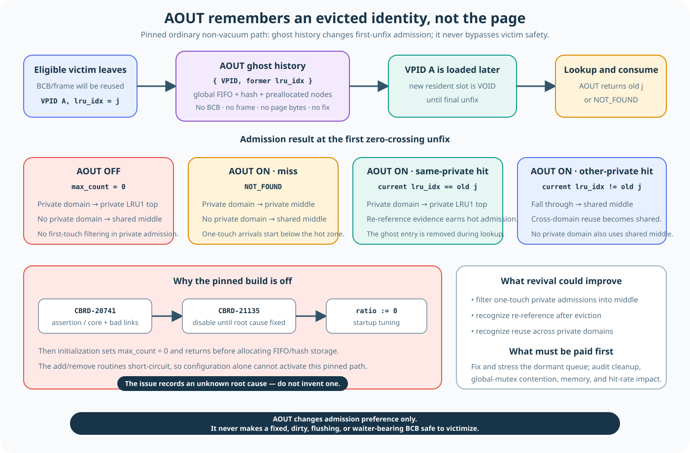

A page miss needs a slot to hold the incoming bytes
Suppose page B is requested but is not resident. The page buffer needs one BCB/frame slot for B.
- Try the invalid list first. An invalid BCB has no resident page identity and needs no eviction.
- If no invalid slot exists, search the LRU victim zone. A resident page must leave before its slot can be reused.
- Choose only a safe victim. Never steal bytes from a fixer, discard unflushed changes, or race an in-progress handoff.
- Detach, then rebind. After the old mapping is safely removed, the same BCB/frame slot can load B.
Replacement is not “find the oldest page.” It is “find an old-enough page that is safe to reuse now.”
Verified mechanism: pinned pgbuf_allocate_bcb() documents and implements invalid-list first, then LRU victim search.
“Try the invalid list” means pop one linked-list head

The array owns storage. The invalid and LRU links organize subsets of those stable BCB slots at runtime.
At startup, BCB_table is allocated as a contiguous array. Initialization sets each slot's next_BCB to the next slot, so building the initial invalid list is O(N) once. The runtime allocation path does not repeat that array loop.
The invalid list has one invalid_top pointer, a count, and a mutex. Its nodes are BCBs connected through next_BCB. Allocation performs an unlocked empty hint, locks and rechecks, moves the head to its next node, unlocks, then locks the returned BCB and changes it to the void zone. That is one-node O(1) list work—not an array scan. The invalid_mutex may still wait under contention, so constant work does not promise constant wall-clock latency.
| Operation | Structure touched | Local work | What can dominate elapsed time |
|---|---|---|---|
| Build initial free population | Contiguous BCB array linked once. | O(N) at page-buffer initialization. | One-time allocation/initialization; not miss-path cost. |
| Take one invalid BCB | Singly linked head via invalid_top/next_BCB. | O(1): no traversal. | Invalid-list mutex scheduling and returned BCB lock. |
| Search one selected LRU | Optional zone demotion, then a doubly linked prev_BCB walk from a hint or bottom. | O(M + K), with scan bound K ≤ 1000 per selected-list call. | LRU mutex wait, demotions, cache misses, failed candidates, and how many selected-list calls policy makes. |
| Recheck one candidate | BCB flags, atomic latch, waiter pointer under BCB protection. | O(1) field checks; BCB try-lock does not wait and skips on failure. | Repeated skips can lengthen the surrounding scan. |
| Detach a known LRU node | Its previous/next links plus zone/count metadata. | O(1). | Work is performed while the LRU mutex is held. |
| Remove old resident mapping | VPID hash bucket's singly linked chain. | O(B) for bucket length B. | Hash-anchor mutex wait and collisions. |
| Load requested old page | DWB lookup or data-volume read into the frame. | Not usefully described as O(1) CPU work. | Storage/cache path and decryption; commonly much larger than pointer updates. |
| Publish loaded BCB | Hash-chain head and one LRU insertion. | Each link insertion is O(1). | Hash/LRU mutex contention. |
“1,000 links” means node visits inside one already-selected LRU

Do not merge three quantities: private-list count P, selected-list LRU3 population Z3, and this call's visit count K.
pgbuf_get_victim_from_lru_list(thread_p, lru_idx) receives one LRU index. It locks that list, starts at its victim_hint or bottom, and follows bufptr->prev_BCB through LRU3. Entering the loop body once means visiting one BCB position: inspect it, perhaps try-lock and recheck it, then return or advance one link. The body runs at most 1,000 times in this call. It does not inspect 1,000 LRU descriptors and does not produce 1,000 victims.
| Quantity | What it counts | Is 1,000 its maximum? |
|---|---|---|
P | Private LRU descriptors in the pool-wide LRU array. | No. Automatic server mode uses MAX_NTRANS + 50. An explicit positive value is 4–4,050 at this baseline. |
Z3 | BCB nodes in the selected list's LRU3. | No. It can exceed 1,000, up to the pool population. |
K | BCB positions visited by this selected-list invocation. | Yes. K ≤ min(reachable Z3, 1000), often less because success or another exit stops early. |
The higher-level policy can make several selected-list calls: the caller's private LRU, an advertised other-private list, an advertised shared list, and a final own-list fallback. Each call gets a fresh 1,000-node budget. If a selected private list is over quota, the helper may also demote M boundary nodes before the scan; that work is outside MAX_DEPTH. The helper is therefore O(M + K), while the linked-list scan itself is bounded O(K).
num_LRU_chains at 1,000 and targets roughly 1,000 buffers per automatically sized shared list. Neither constant caps private LRU count.PSTAT_PB_ALLOC_BCB, PSTAT_PB_ALLOC_BCB_SEARCH_VICTIM, list-search timers, and condition-wait time. Use those counters or a focused benchmark for a target workload; do not convert Big-O into a latency claim.Verified mechanism: BCB array construction and initial links are at page_buffer.c:5559–5660; invalid-list structure and head initialization at 626–634 and 5907–5919; constant-time pop/push at 8905–8983; bounded LRU scan and pre-scan adjustment at 9327–9537 and 9984–10048; private count at 13941–13985.
AOUT remembers that a page left; it does not keep the page

The dormant path changes admission preference. It never relaxes the victim safety gate.
AOUT is CUBRID's implementation of the out-history idea from 2Q. One global FIFO plus hash stores small ghost records: { VPID, former lru_idx }. There is no BCB, frame, page image, fix, latch, or dirty state in the record. If enabled, capacity would be min(floor(num_buffers × data_aout_ratio), 32768).
When a page is victimized, its identity can enter AOUT. If that VPID is loaded again, its first final unfix consumes the ghost and uses the former list index as admission evidence:
| Ordinary private-domain case | Placement | Meaning |
|---|---|---|
| AOUT off—the current pinned path | Private LRU1 top | Every new private page bypasses the ghost filter. |
| AOUT on, miss | Current private LRU middle | A first-seen identity starts below the hot top. |
| AOUT on, same-private hit | Current private LRU1 top | A refault after eviction has demonstrated reuse. |
| AOUT on, other-private hit | Shared LRU middle | Reuse across private domains becomes shared. |
Why is it disabled?
- CBRD-20741 recorded repeated older 10.1 crashes/assertions in
pgbuf_add_vpid_to_aout_list()and corrupted/cyclic queue links. The issue is Confirmed and Unresolved; its discussion says the root cause was unknown. - CBRD-21135 chose to disable
data_aout_ratiountil that defect was fixed. Commitd3554deeeimplemented the workaround. - Pinned
prm_tune_parameters()still unconditionally sets the ratio to zero. Initialization then setsmax_count = 0and returns before allocating FIFO/hash storage; add and lookup paths become no-ops.
Would reviving it help?
Potentially, but only after a correctness repair. The dormant branches could reduce one-pass scan pollution by admitting ghost misses at private middle, reward same-private refaults at the hot top, and recognize cross-private reuse. These are source-derived effects, not measured gains. Revival also adds one global Aout_mutex on eviction/refault, bounded metadata and hash work, and the risk of discarding useful first-seen pages sooner. The queue corruption, concurrent list/hash/free-list invariants, private-list reassignment, startup/shutdown, and ratio boundaries need stress tests before any performance comparison.
Verified mechanism and historical evidence: AOUT structures and capacity are at page_buffer.c:635–666 and 5802–5882; admission is at 6885–6994; forced zero is at system_parameter.c:9975–9987. See the full evidence audit.
The slot stays; the page identity changes
A BCB is a reusable descriptor paired with one reusable frame. Their pool addresses are stable. The current resident page is named by bcb->vpid, and that identity changes only through the controlled detach/load sequence.
| Time | Same pool slot | What it represents |
|---|---|---|
| Before replacement | BCB[42] + frame[42] | Resident page A. |
| After safe detach | BCB[42] + frame[42] | No resident page; available for controlled reuse. |
| After the miss loads | BCB[42] + frame[42] | Resident page B. |
Ask four plain questions before reuse

LRU position suggests a candidate. It never overrides the safety gate.
| Question | Unsafe example | Why reuse must wait |
|---|---|---|
| Is anybody using it? | fcnt > 0 | A successful fixer still owns the frame and may use its borrowed pointer. |
| Are changed bytes still unpaid? | DIRTY or FLUSHING | Dirty bytes still need propagation, or a copied generation still owns completion work. |
| Is another operation waiting or claiming it? | next_wait_thrd != NULL or an avoid-victim flag | A waiter, invalidation, or direct-victim handoff still refers to this BCB. |
| Are these facts still true now? | The earlier scan was made without BCB protection. | A fixer or flusher may have changed the candidate after it was first observed. |
fcnt == 0 means “no current fixer was counted.” It does not also mean clean, not flushing, no waiters, and safely detached.Scan cheaply, then make the destructive decision under locks
- The LRU mutex stabilizes the list while the scanner finds a likely candidate.
PGBUF_BCB_TRYLOCK()tries to protect that BCB. It does not wait while holding the LRU mutex; failure skips the candidate.- With BCB protection held,
pgbuf_is_bcb_victimizable(..., true)checks the candidate's current ownership, waiters, and avoid-victim state again. - Only a passing candidate is removed from the LRU. It is returned still BCB-locked so victimization/rebind owns an exclusive handoff.
Why check twice? The first read is a hint. Between that read and the BCB lock, another thread may fix the page or start a flush. The protected read is the decision. If the facts changed, skip and continue searching.
Verified mechanism: victim predicates are at page_buffer.c:9265–9325; scan, try-lock, protected recheck, detach, and locked return are at 9399–9478.
The allocator waits or retries; it does not steal a fixed page
If every candidate is fixed, dirty, flushing, waiting, or in another handoff, victim search returns nothing. A flush can make a dirty candidate clean. An unfix can end ownership. In server mode, an allocating thread may wait for a directly assigned victim and retry if that candidate is fixed again before consumption.
The LRU policy decides which safe candidate to prefer and how to make progress. It may change across revisions. The safety rule does not: a successful fixer or incomplete flush generation must not survive the slot's rebind.
| Mechanism | Its job |
|---|---|
| Safety gate | Answers “may this slot be reused now?” |
| LRU zones, private/shared lists, quota, hints | Order or locate candidates that may be preferable. |
| Flush and direct-victim progress | Help produce an eligible slot when the first search finds none. |
Implementation policy: wait/retry is pinned at page_buffer.c:8236–8403. Detailed LRU lifetime, quota, and direct-victim behavior belong to the linked Core and Advanced pages, not this first mental model.
Unfix, flush, and victimize solve different debts
| Operation | What ends | What can remain |
|---|---|---|
| Unfix | One caller's fix debt. | The page can remain resident and dirty. |
| Flush | One copied generation's propagation debt. | The page can remain resident, and a newer generation can be dirty. |
| Victimize | The old resident mapping, after every safety condition passes. | The logical page still exists on storage. |
Choose the only possible candidate
Prompt
Page B misses and the invalid list is empty. The LRU scan sees A with fcnt = 1, C with DIRTY, and D with fcnt = 0, no dirty/flushing flag, and no observed waiter.
Which pages are immediately rejected? Is D already a victim, or only a candidate? Describe the final protected step before D's slot can represent B.
Trace one candidate from scan to detach
Read pinned page_buffer.c:9399–9478. Mark four points: cheap prefilter, BCB try-lock, protected victimizable check, and LRU removal.
Open the canonical replacement chapter → · Open advanced progress details →